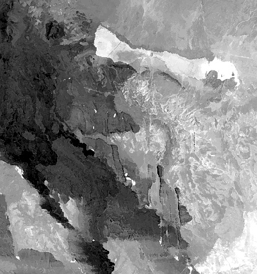
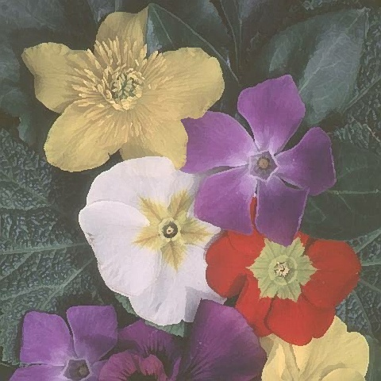

This filter performs a subtle but useful sharpening effect. It operates by running a small window over the frame and each center pixel is either passed through untouched (depending upon a threshold setting), or mapped to either the brightest or dimmest pixel in the window, depending upon which is nearest to the center pixel. If the center pixel is mapped, it is also alpha-blended with the original pixel value using a configurable strength setting. The result is a sharpening effect that not only avoids amplifying noise, but also tends to reduce it. A welcome side effect is that files processed with this filter tend to compress to smaller files.
Following are before and after pictures from a satellite image (default parameters):

And here are before and after pictures from a color image (default parameters):

The following options are available:
Strength When this value is 255, mapped pixels are not blended with the original pixel values, so a full-strength effect is obtained. As the value is reduced, each mapped pixel is blended with more of the original pixel. At a value of 0, the original pixels are passed through and there is no sharpening effect.
Threshold This value determines how close a pixel must be to the brightest or dimmest pixel to be mapped. If a pixel is more than threshold away from the brightest or dimmest pixel, it is not mapped. Thus, as the threshold is reduced, pixels in the mid range start to be spared.
Frankly, at this time it is not clear that both the strength and threshold parameters are necessary. However, until matters become clear through experience, both are retained.
Feedback and suggestions will be gratefully received. For additional information, version updates, and other filters, please go to the following web site:
Filters for VirtualDub
http://sauron.mordor.net/dgraft/index.html
Donald Graft
neuron2@home.com
July 27, 2001
(C) Copyright 2001, All Rights Reserved